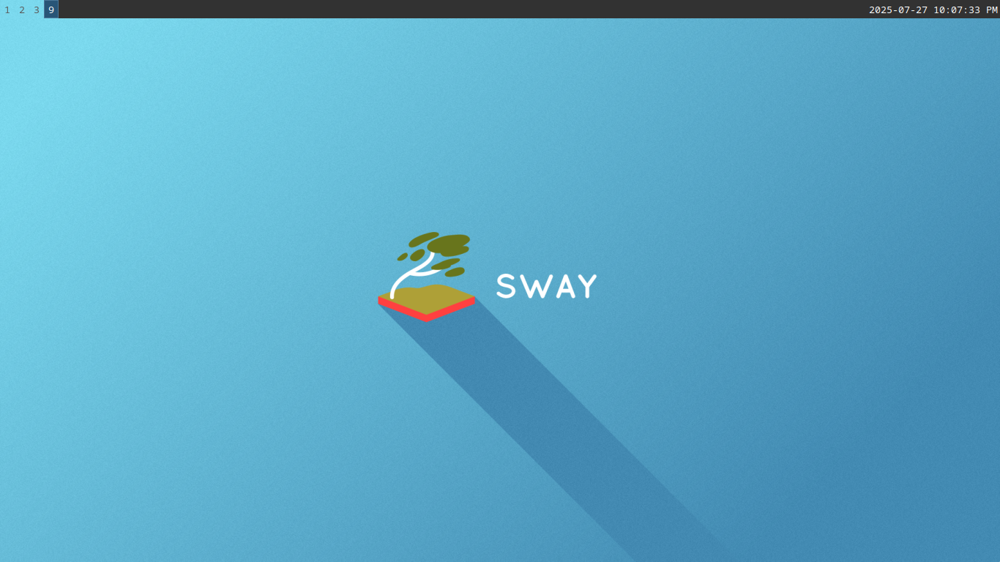

Sway Configuration
Table of Contents
Sway
This is my personal sway window manager configuration. The aim is:
- Very minimal configuration
- Copy what worked from my i3 configuration.
- Use the default application
- When possible, that is.
The configuration.
I will start from the default (on archlinux it's provided in the package, and can be found on /etc/sway/config)
# Default config for sway # # Copy this to ~/.config/sway/config and edit it to your liking. # # Read `man 5 sway` for a complete reference. ### Variables # # Logo key. Use Mod1 for Alt. set $mod Mod4 # Home row direction keys, like vim set $left h set $down j set $up k set $right l # Your preferred terminal emulator set $term foot # Your preferred application launcher set $menu wmenu-run ### Output configuration # # Default wallpaper (more resolutions are available in /usr/share/backgrounds/sway/) output * bg /usr/share/backgrounds/sway/Sway_Wallpaper_Blue_1920x1080.png fill # # Example configuration: # # output HDMI-A-1 resolution 1920x1080 position 1920,0 # # You can get the names of your outputs by running: swaymsg -t get_outputs ### Idle configuration # # Example configuration: # # exec swayidle -w \ # timeout 300 'swaylock -f -c 000000' \ # timeout 600 'swaymsg "output * power off"' resume 'swaymsg "output * power on"' \ # before-sleep 'swaylock -f -c 000000' # # This will lock your screen after 300 seconds of inactivity, then turn off # your displays after another 300 seconds, and turn your screens back on when # resumed. It will also lock your screen before your computer goes to sleep. ### Input configuration # # Example configuration: # # input type:touchpad { # dwt enabled # tap enabled # natural_scroll enabled # middle_emulation enabled # } # # input type:keyboard { # xkb_layout "eu" # } # # You can also configure each device individually. # Read `man 5 sway-input` for more information about this section. ### Key bindings # # Basics: # # Start a terminal bindsym $mod+Return exec $term # Kill focused window bindsym $mod+Shift+q kill # Start your launcher bindsym $mod+d exec $menu # Drag floating windows by holding down $mod and left mouse button. # Resize them with right mouse button + $mod. # Despite the name, also works for non-floating windows. # Change normal to inverse to use left mouse button for resizing and right # mouse button for dragging. floating_modifier $mod normal # Reload the configuration file bindsym $mod+Shift+c reload # Exit sway (logs you out of your Wayland session) bindsym $mod+Shift+e exec swaynag -t warning -m 'You pressed the exit shortcut. Do you really want to exit sway? This will end your Wayland session.' -B 'Yes, exit sway' 'swaymsg exit' # # Moving around: # # Move your focus around bindsym $mod+$left focus left bindsym $mod+$down focus down bindsym $mod+$up focus up bindsym $mod+$right focus right # Or use $mod+[up|down|left|right] bindsym $mod+Left focus left bindsym $mod+Down focus down bindsym $mod+Up focus up bindsym $mod+Right focus right # Move the focused window with the same, but add Shift bindsym $mod+Shift+$left move left bindsym $mod+Shift+$down move down bindsym $mod+Shift+$up move up bindsym $mod+Shift+$right move right # Ditto, with arrow keys bindsym $mod+Shift+Left move left bindsym $mod+Shift+Down move down bindsym $mod+Shift+Up move up bindsym $mod+Shift+Right move right # # Workspaces: # # Switch to workspace bindsym $mod+1 workspace number 1 bindsym $mod+2 workspace number 2 bindsym $mod+3 workspace number 3 bindsym $mod+4 workspace number 4 bindsym $mod+5 workspace number 5 bindsym $mod+6 workspace number 6 bindsym $mod+7 workspace number 7 bindsym $mod+8 workspace number 8 bindsym $mod+9 workspace number 9 bindsym $mod+0 workspace number 10 # Move focused container to workspace bindsym $mod+Shift+1 move container to workspace number 1 bindsym $mod+Shift+2 move container to workspace number 2 bindsym $mod+Shift+3 move container to workspace number 3 bindsym $mod+Shift+4 move container to workspace number 4 bindsym $mod+Shift+5 move container to workspace number 5 bindsym $mod+Shift+6 move container to workspace number 6 bindsym $mod+Shift+7 move container to workspace number 7 bindsym $mod+Shift+8 move container to workspace number 8 bindsym $mod+Shift+9 move container to workspace number 9 bindsym $mod+Shift+0 move container to workspace number 10 # Note: workspaces can have any name you want, not just numbers. # We just use 1-10 as the default. # # Layout stuff: # # You can "split" the current object of your focus with # $mod+b or $mod+v, for horizontal and vertical splits # respectively. bindsym $mod+b splith bindsym $mod+v splitv # Switch the current container between different layout styles bindsym $mod+s layout stacking bindsym $mod+w layout tabbed bindsym $mod+e layout toggle split # Make the current focus fullscreen bindsym $mod+f fullscreen # Toggle the current focus between tiling and floating mode bindsym $mod+Shift+space floating toggle # Swap focus between the tiling area and the floating area bindsym $mod+space focus mode_toggle # Move focus to the parent container bindsym $mod+a focus parent # # Scratchpad: # # Sway has a "scratchpad", which is a bag of holding for windows. # You can send windows there and get them back later. # Move the currently focused window to the scratchpad bindsym $mod+Shift+minus move scratchpad # Show the next scratchpad window or hide the focused scratchpad window. # If there are multiple scratchpad windows, this command cycles through them. bindsym $mod+minus scratchpad show # # Resizing containers: # mode "resize" { # left will shrink the containers width # right will grow the containers width # up will shrink the containers height # down will grow the containers height bindsym $left resize shrink width 10px bindsym $down resize grow height 10px bindsym $up resize shrink height 10px bindsym $right resize grow width 10px # Ditto, with arrow keys bindsym Left resize shrink width 10px bindsym Down resize grow height 10px bindsym Up resize shrink height 10px bindsym Right resize grow width 10px # Return to default mode bindsym Return mode "default" bindsym Escape mode "default" } bindsym $mod+r mode "resize" # # Utilities: # # Special keys to adjust volume via PulseAudio bindsym --locked XF86AudioMute exec pactl set-sink-mute \@DEFAULT_SINK@ toggle bindsym --locked XF86AudioLowerVolume exec pactl set-sink-volume \@DEFAULT_SINK@ -5% bindsym --locked XF86AudioRaiseVolume exec pactl set-sink-volume \@DEFAULT_SINK@ +5% bindsym --locked XF86AudioMicMute exec pactl set-source-mute \@DEFAULT_SOURCE@ toggle # Special keys to adjust brightness via brightnessctl bindsym --locked XF86MonBrightnessDown exec brightnessctl set 5%- bindsym --locked XF86MonBrightnessUp exec brightnessctl set 5%+ # Special key to take a screenshot with grim bindsym Print exec grim # # Status Bar: # # Read `man 5 sway-bar` for more information about this section. bar { position top # When the status_command prints a new line to stdout, swaybar updates. # The default just shows the current date and time. status_command while date +'%Y-%m-%d %X'; do sleep 1; done colors { statusline #ffffff background #323232 inactive_workspace #32323200 #32323200 #5c5c5c } } include /etc/sway/config.d/*

Figure 1: The default sway